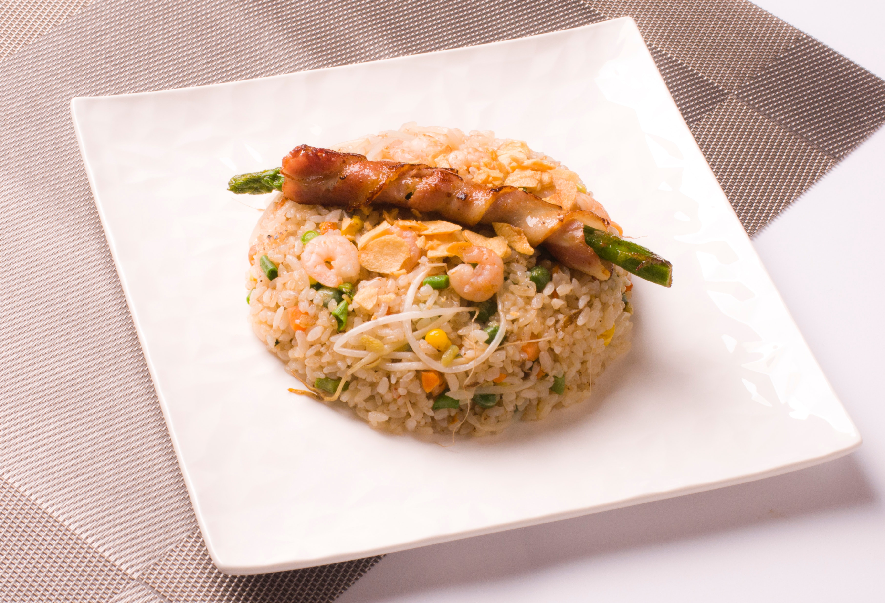

Yakimeshi

Un arroz salteado muy flexible ya que queda bien con cualquier proteína o verdura que haya a la mano.
Ideal para rescatar el arroz que haya sobrado de una comida anterior!
Ingredientes:
- Arroz cocido
- Cebolla
- Cebolla de verdeo
- Verduras a elección (zanahoria, chaucha, brocoli, choclo, morron, arvejas, etc.)
- Proteína a elección (Carne de cerdo,vacuna, camarón, etc. Puede reemplazarse con brote de soja.)
- Salsa de soja
- Azucar
- Sal y pimienta
- Huevo (opcional)
Preparacion:
- Cortar las verduras y la carne elegida en cubitos y separar para despues
- Cortar la cebolla en juliana y saltear en abundante aceite.
- Incorporar la carne elegida y saltear hasta que este bien cocida.
- Incorporar la verdura según tiempo de cocción (Por ej. primero la zanahoria, luego el brocoli y al final la cebolla de verdeo.) y saltear hasta alcanzar un punto semicrudo.
- Agregar el arroz, la salsa de soja y una pizca de azucar y salpimentar a gusto.(Opcional: agregar un huevo batido)
- Mezclar bien hasta incorporar todo. Retirar del fuego y servir.